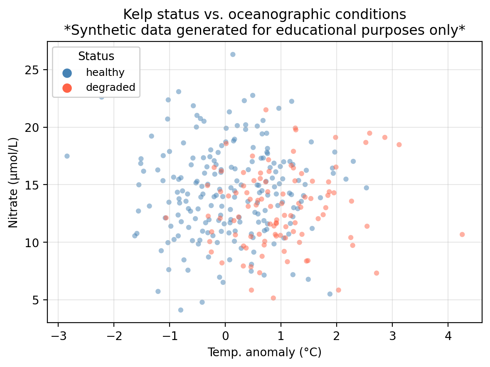
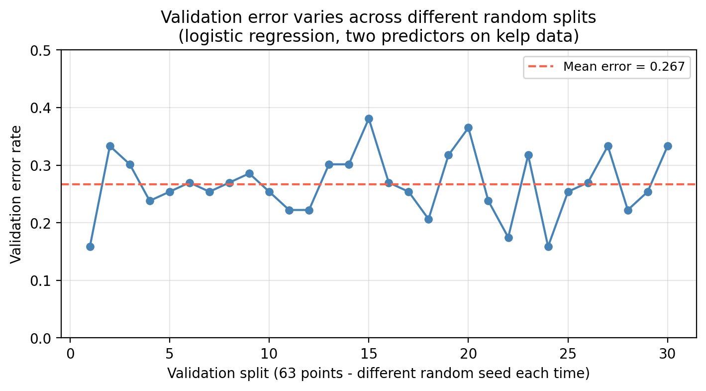
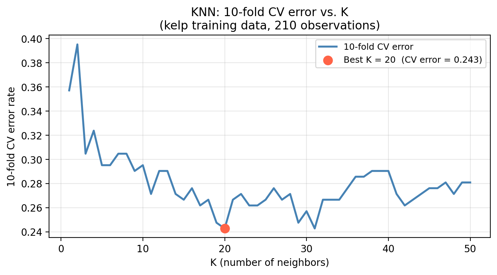

Cross-validation
In this lesson we introduce:
- Using a validation set to estimate the test set error
- The validation set approach and why it produces variable error estimates
- K-fold cross-validation
- Using cross-validation to select hyperparameters (e.g., \(K\) in KNN)
- Using cross-validation to compare models
These notes are based on chapter 5 of An Introduction to Statistical Learning with Applications in Python (James et al. 2023). The example data is synthetic and was generated with the aid of Claude Code for the purpose of this lesson.
A guiding example: kelp forest monitoring
In this lesson we use the same example dataset as in our KNN lesson: a synthetic dataset that “tracks” 300 coastal monitoring stations. For each station we record:
temp_anomaly— sea surface temperature anomaly (°C); positive values indicate warmer-than-average conditionsnitrate— nitrate concentration (μmol/L); higher values generally support kelp growthstatus— observed kelp forest condition: healthy or degraded
The central question is: can we predict whether a kelp forest site is healthy or degraded from its oceanographic conditions?
In the previous lesson we introduced logistic regression to predict kelp forest status in this dataset. In this lesson we study how we can use cross-validation to choose amongst different models and select hyperparameters.
Why cross-validation?
Recall from the logistic regression lesson that once we fit a model, we classify observations by comparing the predicted probability \(p(X)\) to a classification threshold \(\alpha\). In our example data this means we
\[\text{predict healthy if } p(X) \geq \alpha \text{, degraded otherwise.}\]
The default is \(\alpha = 0.5\), but different thresholds shift the tradeoff between precision and recall, so the default may not always be the threshold we want to use to maximize our accuracy metric. How should we choose \(\alpha\)?
Suppose we want to maximze overall accuracy, a natural approach: try many threshold values, measure accuracy on the test set for each, and pick the best. We obtain the following information:
Accuracy at default threshold α = 0.50: 0.711
Best threshold found on test set: α = 0.59
Accuracy at that threshold (on test set): 0.722We found a threshold that beats the default, but we might be making a mistake if using this value beacuse we used the test set to make a modeling decision. We examined the test set outcomes to figure out which threshold works best, and then reported the accuracy for that threshold on the very same observations we used to select it.
This is called data leakage: information from the test set leaked into our modeling process. The reported accuracy is no longer an honest estimate of how the model performs on new, truly unseen data. We selected \(\alpha\) because it happened to work well on these test observations, not because it generalizes well.
The workflow we have used so far is
- Split our available data into a training set and a test set.
- Fit the model on the training set.
- Evaluate performance on the test set.

This works well when we have already committed to a single (or a few) fully specified models. But as soon as we need to make any modeling decision, consulting the test set to do so can interfere. The test set serves as an honest final evaluation if it plays no role in any decision made along the way.
The fix is straightforward: make modeling decisions using only the training data, and keep the test set sealed until the very final evaluation. Cross-validation (a type of resampling method) is the standard tool for doing this.
The validation set approach
Before going into cross-validation, let’s talk about the validation set approach. This is the simplest resampling method, the building block for cross-validation, and consists of the following steps:
- Randomly divide the training observations into a training set and a validation set (also called hold-out set).
- Fit the model on the (smaller) training set.
- Compute the error using the fitted model on the validation set.
The validation error obtained in step 3 is the estimate for the test error.

Notice that when we divide our data into training and validation sets in step 1, the test error estimate depends on the particular randomly selected validation set. This is a drawback of this approach since different validation sets can greatly vary the test error estimate (high variance). We can see this variation in our example kelp classification data when we use different random splits to create the validation set:

Check-in
The training set for the kelp data has 210 points and 90 test points. The plot above shows the results using validation sets with 63 points. If you decided to use a 50/50 validation split (110 poits for training/110 points for validation), what would be a bigger concern: the validation error being much higher or much lower than the test error?
Discussion
The bigger concern is the validation error being much higher than the test error.
The validation error estimates how well a model trained on 110 observations performs. But the model you will ultimately deploy is trained on all 210 observations. More training data almost always produces a better-fitting model, so the final model will perform better than the one evaluated during validation.
A second drawback is that setting aside part of the training data for validation means the model is fit on fewer observations than we will ultimately use (introducing higher bias). Models fit on less data tend to perform worse, so the validation error will tend to overestimate the true test error of the final model (which will be trained on more data).
\(k\)-fold cross-validation
\(k\)-fold cross-validation is the standard resampling method in practice. It overcomes both drawbacks of the validation set approach (high variance from a single split and upward bias from training on fewer observations) by systematically rotating through all the data. We use the following steps to do the \(k\)-fold cross-validation:
- Randomly divide the training set into \(k\) roughly equal-sized folds.
- Hold out the first fold as the validation set; fit the model on the remaining \(k - 1\) folds.
- Compute the error \(\text{Err}_1\) on the held-out fold.
- Repeat steps 2–3 for each of the \(k\) folds, each time holding out a different fold.
- Average the \(k\) fold errors \(\text{Err}_1, \ldots, \text{Err}_k\) to obtain an estimate of the test errors:
\[\text{CV}_{(k)} = \frac{1}{k} \sum_{i=1}^{k} \text{Err}_i.\]
In practice we use \(k=5\) or \(k=10\) for the number of folds. These values strike a good balance: each fold uses 80–90% of the training data per fit and fitting only 5 or 10 models is also computationally cheap. The fold errors are less correlated with each other than in approaches that use more folds, which tends to produce stable estimates of the test error.

scikit-learn’s documentation on cross-validation
Check-in
In 5-fold CV on our 210-observation training set:
- Approximately how many observations are in each fold?
- How many observations are used to train the model in each iteration?
- What happens if you set \(k = n\) (i.e., one observation per fold)? Will running this procedure twice on the same data give the same result or a different one? Why?
Discussion
- \(210 / 5 = 42\) observations per fold.
- \(210 - 42 = 168\) observations for training in each fold.
- Setting \(k = n\) means each fold contains exactly one observation — this is leave-one-out cross-validation (LOOCV). Because there is only one way to hold out each single observation, there is no randomness in how the folds are formed. Running LOOCV twice on the same data always produces exactly the same result. (Contrast this with \(k = 5\) or \(k = 10\), where the random fold assignment can vary unless a random seed is fixed.)
Computing the fold error
How we measure \(\text{Err}_i\) in step 3 depends on the type of problem.
Regression: Use the Mean Squared Error (MSE) on the held-out fold:
\[\text{Err}_i = \text{MSE in fold $i$} = \frac{1}{n_i} \sum_{j \in \text{fold } i} (y_j - \hat{y}_j)^2,\]
where \(n_i\) is the number of observations in fold \(i\), \(y_j\) is the true response, and \(\hat{y}_j\) is the model’s prediction.
Classification: Use the misclassification rate on the held-out fold:
\[\text{Err}_i = \text{error rate in fold $i$} = \frac{1}{n_i} \sum_{j \in \text{fold } i} \mathbf{1}(\hat{y}_j \neq y_j)\]
where \(\mathbf{1}(\hat{y}_i \neq y_i)\) equals 1 if observation \(i\) was assigned the wrong class and 0 otherwise. This is simply the fraction of observations within the fold that were misclassified.
Other metrics
The error rate or MSE are not the only metrics that can be estimated with cross-validation. Any performance metric that gives us a number can be substituted. In classification, this includes precision, recall, \(F_1\), and AUC; in regression, you could use \(R^2\). The procedure is identical: compute the chosen metric on each held-out fold, then average across folds. For example, in our kelp data we can estimate the test accuracy, precision, and recall in for our classifier using 5-fold CV as shown in the results below:
Fold Accuracy Precision Recall
1 0.6905 0.6763 0.6905
2 0.7857 0.7910 0.7857
3 0.8095 0.8056 0.8095
4 0.8095 0.8009 0.8095
5 0.7619 0.7711 0.7619
Mean CV accuracy: 0.7714
Mean CV precision: 0.7690
Mean CV recall: 0.7714Using CV to select a hyperparameter
The classification threshold we saw in the example at the beginning of the section is one instance of a what is called a hyperparamenter. In this section we see how cross-validation can help us tune hyperparameters for our models without risking information from our test set leaking into our model development.
A hyperparameter is any setting of a model that is chosen by the analyst and cannot be learned from the training data during model fitting. Unlike model parameters (such as regression coefficients, which the algorithm estimates from data), hyperparameters must be set before fitting and control how the model learns.
Some examples we have already encountered:
| Model | Hyperparameter | What it controls |
|---|---|---|
| K-Nearest Neighbors | \(K\) (number of neighbors) | Smoothness of the decision boundary |
| Logistic Regression | Classification threshold \(\alpha\) | Precision–recall tradeoff |
One of the most important uses of cross-validation is hyperparameter selection: choosing a model parameter that cannot be learned from the training data directly. Generally, we follow these steps to do so:
- Identify the hyperparameter you want to examine.
- For each candidate value of the hyperparameter, compute the \(k\)-fold CV error on the training set.
- Select the hyperparameter that resulted in the lowest CV error. If there are several candidates, opt for the one that gives the simpler model.
- Refit the model using the selected hyperaparameter on the full training set.
- Evaluate the final model once on the test set.
In our kelp classification task, KNN requires choosing \(K\), the number of neighbors. Recall a small \(K\) produces a flexible model that may overfit; a large \(K\) produces a smooth model that may underfit. Cross-validation gives us a way to select \(K\) without touching the test set:
- For each candidate value of \(K\), compute the \(k\)-fold CV error on the training set.
- Select the \(K\) with the lowest CV error.
- Refit the final KNN model using that \(K\) on the full training set.
- Evaluate once on the test set.
The graph below shows us what this procedure looks like for our kelp data looking at \(K\) from 0 to 50.

Once we have selected \(K\) using CV, we refit the model on the full training set and evaluate it once on the test set:
Selected K (via CV): 20
CV error estimate: 0.2429
Actual test error: 0.3333The CV error and the test error should be in a similar range. If they are, it means cross-validation gave us a reliable estimate of how the model generalizes before we ever touched the test set.
Check-in
- Describe what happens to the decision boundary as \(K\) increases from 1 to 50. How does this relate to bias and variance?
- Once \(K\) is selected using CV, on what data should the final KNN model be fit before evaluating on the test set?
- Why would it be incorrect to use the test set to select \(K\) and then report performance on that same test set?
Discussion
- As \(K\) increases, the decision boundary becomes more connected and less sensitive to individual training points. Bias increases (the model cannot capture fine-grained patterns) but variance decreases (predictions are more stable across datasets). At \(K = 1\) the boundary traces every training point perfectly — very low bias, very high variance. At \(K = n\) the model always predicts the majority class — maximum bias, near-zero variance.
- The final model should be refit on the full training set (all 210 observations) using the selected \(K\). Cross-validation only informs the choice of \(K\); the final fit uses all available training data.
- Selecting \(K\) based on test set performance means the test set has influenced our modeling decisions. The reported accuracy would reflect how well we optimized for that particular test set, not how well the model generalizes to new data. The test set must remain unseen until the very final evaluation.
Overall, we follow the following workflow when using our data to find the best (hyper)parameters:

scikit-learn’s documentation on cross-validationComparing models with CV
Cross-validation is also used to compare different model types on the same training data before ever touching the test set.
Model CV error (mean)
KNN (K=20) 0.243
Logistic (temp only) 0.295
Logistic (temp + nitrate) 0.243Once you have selected a model using CV, refit it on the full training set and report its performance on the test set once, as the final evaluation.
Check-in
- Which model would you select based on this CV comparison?
- Earlier in this lesson we saw that selecting the classification threshold using the test set leads to data leakage. How is using CV to compare these three models solving the same underlying problem?
Discussion
- Select the model with the lowest mean CV error.
- Any time we use the test set to inform a decision — whether choosing a threshold, tuning \(K\), or picking between model types — we are optimizing for those specific observations and the test error is no longer an honest estimate of generalization. CV solves this in all three cases the same way: it estimates how each candidate will perform on new data using only the training set, so the test set stays untouched until the very final evaluation.
References
James, Gareth, Daniela Witten, Trevor Hastie, Robert Tibshirani, and Jonathan E. Taylor. 2023. An Introduction to Statistical Learning: With Applications in Python. Springer Texts in Statistics. Cham: Springer.